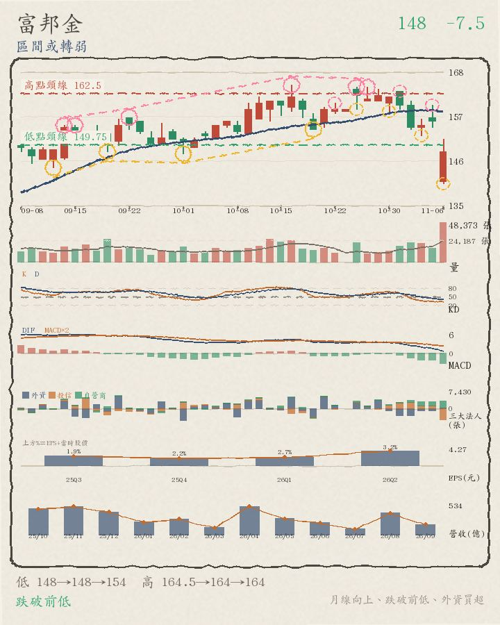

← 回股市觀察
逐檔技術線型分析
→ 看當日逐檔技術線型分析（全檔） 歷次逐檔分析
2026/11/11 · 成交金額上市前 50 名 ＋ 上櫃前 20 名（共 70 檔）· 公開資料整理
44257.15
加權指數 +1,545.23 點（+3.62%）
634 / 368
上市個股上漲／下跌家數
上漲 58.5% · 下跌 34.0% · 持平 7.5%（共 1083 檔）
520 / 288
上櫃個股上漲／下跌家數
上漲 59.6% · 下跌 33.0% · 持平 7.3%（共 872 檔）
統計範圍：當日成交金額上市前 50 名 ＋ 上櫃前 20 名（共 70 檔，皆為 4 位數代號的個股，不含 ETF／權證）。
兩個市場各自取前 N 名後合併呈現，卡片上標示市場別（上市／上櫃），清單也附市場分布。
條件統計：上市 上升趨勢：底底高 ＋ 頭頭高 1 檔、突破頸線 3 檔、底底高 2 檔、頭頭高 7 檔、站上月線 11 檔、月線向上 4 檔、外資買超 19 檔、量價攻擊（收紅＋大量） 26 檔、跌破前低（線型轉弱） 5 檔；上櫃 上升趨勢：底底高 ＋ 頭頭高 0 檔、突破頸線 0 檔、底底高 0 檔、頭頭高 1 檔、站上月線 5 檔、月線向上 0 檔、外資買超 8 檔、量價攻擊（收紅＋大量） 16 檔、跌破前低（線型轉弱） 3 檔。
五項全滿足（底底高＋頭頭高＋站上月線＋月線向上＋5 日線向上）：上市 華經；上櫃 無。
資料日 2026/11/11。籌碼：上市為證交所三大法人、上櫃為櫃買中心三大法人；上櫃另附融資餘額。
每一檔都附上 K 線圖與線型說明：黃圈是轉折低點、粉圈是轉折高點、藍線是月線。
圖上兩條水平虛線、左側標數值：高點頸線（紅，連到最多「轉折高點」的那條水平線，代表上方壓力帶；收盤站上就算突破）與
低點頸線（綠，連到最多「轉折低點」的那條水平線，代表下方支撐帶；收盤跌破就算跌破）；
兩條線都只看最近 6 個轉折點、容忍同一價位帶 4%，連不到 2 個轉折點就不畫。
卡片的標籤可以點回上方對應清單，清單裡的股名也可以點到該檔。
本頁為公開資料（證交所每日收盤行情與三大法人、櫃買中心每日收盤行情與三大法人、Yahoo 股市日線）的整理與觀察，
不構成投資建議，不報牌、不預測、不下買賣決策。
大盤趨勢快篩（加權指數） 資料日 2026/11/11・來源：證交所公開資料
主狀態：跌破月線
前一交易日對照（11/10）：跌破月線（量比 20 1.05） → 今日跌破月線（量比 20 0.89）
指標、數值、判定（點開看 12 項明細：均線位置／排列、月線方向、頸線、轉折結構、位階、量價…）
加權指數今天漲 1,545.23 點（+3.62%），收 44,257.15、跌破月線 45,144.41；月線還在下彎，MA20 這條短均還沒收復，離高點頸線 47,372.65 還差 6.58%。
- 均線位置：4 條均線站上 2 條；沒站上的是 MA20 45,144.41（收盤比它低 1.97%）、MA60 46,299.61（收盤比它低 4.41%）
- 月線方向：月線 MA20 現在 45,144.41，比 5 個交易日前低 1,902.46 點 → 下彎
- 量能：集中市場成交 8,763.0 億，比 5 日均量少一些（0.86 倍）、比 20 日均量少一些（0.89 倍）
- 關鍵價位：高點頸線 47,372.65，還差 6.58%；低點頸線 38,610.95，還在下方 14.62%
- 大小型股：加權 +3.62%、櫃買 +3.35%，兩邊同向

圖說：加權指數日 K（與個股圖相同標記）：黃圈＝轉折低點、粉圈＝轉折高點、虛線小圈＝還沒確認的轉折、藍線＝月線 MA20、水平虛線＝高點／低點頸線。最後一根是資料日當天。
本區塊為公開資料的技術面觀察，不構成投資建議，
不報牌、不預測、不下買賣決策。成交金額為集中市場總成交金額（含 ETF／權證），
與頁首摘要的「上市個股成交金額」口徑不同。標籤是統計，不是評分、也不是推薦。
上市 vs 上櫃（同期快篩）
加權 +3.62% vs 櫃買 +3.35%（同向） → 同向
（兩個市場分開寫，不合併成一個數字；櫃買為 TPEX 公開資料）
櫃買歷史：TPEX 逐日回補 130 根；來源：櫃買中心 www/zh-tw/indexInfo/sectinx（逐日，官方；OpenAPI tpex_index 只回當月）
（TPEX OpenAPI 只回當月，故逐日回補；歷史不足就不算該條均線並標「資料不足」，不用錯數字）
近 20 個交易日大盤狀態回溯（最新在上）（點開看逐日主狀態／量比／量價象限）
用同一支程式回算最近 20 個交易日（主狀態 S1~S8 與量比 20 皆為當日收盤當時的判定，
不是事後調整）；量比 20 未公布的日子寫「—」。
好條件最多的（前 10）
不好條件最多的（前 10）
本期市場狀態：空頭（等權指數在 60 日均線之下）（空頭期間：趨勢類條件反向（回測後 20 日差距 −0.9% ~ −2.1%），本排行改用超跌反轉類（跌破前低／在月線之下／月線下彎））
好條件（4 項）：跌破前低、在月線之下、月線下彎、外資買超。
不好條件（5 項）：站上月線、月線向上、突破頸線、量價攻擊（收紅＋大量）、外資賣超。
兩邊都是同一組資料（日線結構＋當日收盤量價籌碼）算出來的「符合項目數」，只是方向相反；
條件數不是評分、也不是推薦，不構成投資建議。
上升趨勢：底底高 ＋ 頭頭高（1 上市 1／上櫃 0）
量價攻擊（收紅＋大量）（42 上市 26／上櫃 16）
逐檔分析（70 檔）
區間或轉弱 成交金額 779.01 億・全榜第 1 名（上市第 1 名）
好條件 2/4：月線下彎、外資買超
不好條件 1/5：站上月線

今天收紅、站上月線 2357.5，離高點頸線 2590 還差 7.5%，轉折還沒走出明顯方向。
- 月線位置：收盤 2395 在月線 2357.5 之上；5 日線 2258 也在月線之下（短均在下）；月線走平或向下、5 日線走平或向下
- 量能：成交量是 20 日均量的 0.96 倍，跟 20 日均量差不多
- 關鍵價位：高點頸線 2590 還沒突破，差 7.5%；最近轉折高點 2435（低於 1.6%）；最近轉折低點 2020（高於 18.6%）
- 轉折結構：低點 2375、2375、2020 與高點 2510、2590、2435 都沒有明顯遞增，屬於區間震盪或轉弱；還沒確認的轉折低點 10-27 2380、11-04 2235；還沒確認的轉折高點 11-09 2290、11-11 2395（圖上虛線小圈）
區間或轉弱 成交金額 530.06 億・全榜第 2 名（上市第 2 名）
好條件 1/4：月線下彎
不好條件 3/5：站上月線、量價攻擊（收紅＋大量）、外資賣超

今天帶量收紅、站上月線 295.95，離高點頸線 350.5 還差 10.7%，轉折還沒走出明顯方向。
- 月線位置：收盤 313 在月線 295.95 之上；5 日線 270.7 也在月線之下（短均在下）；月線走平或向下、5 日線走平或向下
- 量能：成交量是 20 日均量的 1.71 倍，比 20 日均量大不少；收紅又量增，量價配合
- 關鍵價位：高點頸線 350.5 還沒突破，差 10.7%；最近轉折高點 325（低於 3.7%）；最近轉折低點 224.5（高於 39.4%）
- 轉折結構：低點 223、295、224.5 與高點 350.5、325.5、325 都沒有明顯遞增，屬於區間震盪或轉弱；還沒確認的轉折低點 10-27 290.5；還沒確認的轉折高點 11-02 308、11-11 314.5（圖上虛線小圈）
區間或轉弱 成交金額 418.18 億・全榜第 3 名（上市第 3 名）
好條件 1/4：月線下彎
不好條件 3/5：站上月線、量價攻擊（收紅＋大量）、外資賣超

今天收紅、站上月線 3965.75，離高點頸線 5480 還差 27.2%，轉折還沒走出明顯方向。
- 月線位置：收盤 3990 在月線 3965.75 之上；5 日線 3679 也在月線之下（短均在下）；月線走平或向下、5 日線走平或向下
- 量能：成交量是 20 日均量的 1.03 倍，跟 20 日均量差不多
- 關鍵價位：高點頸線 5480 還沒突破，差 27.2%；最近轉折高點 4245（低於 6.0%）；最近轉折低點 3115（高於 28.1%）
- 轉折結構：低點 4430、4875、3115 與高點 5480、5165、4245 都沒有明顯遞增，屬於區間震盪或轉弱；還沒確認的轉折低點 10-27 3910；還沒確認的轉折高點 11-02 4070、11-10 4065（圖上虛線小圈）
高點墊高、底部不穩 成交金額 261.2 億・全榜第 4 名（上市第 4 名）
好條件 2/4：在月線之下、月線下彎
不好條件 2/5：量價攻擊（收紅＋大量）、外資賣超

今天帶量收紅、跌破月線 1433.75，離高點頸線 2115 還差 38.8%，高點還在墊高（但底部沒同步墊高）。
- 月線位置：收盤 1295 在月線 1433.75 之下；5 日線 1183 也在月線之下（短均在下）；月線走平或向下、5 日線走平或向下
- 量能：成交量是 20 日均量的 1.40 倍，比 20 日均量大不少；收紅又量增，量價配合
- 關鍵價位：高點頸線 2115 還沒突破，差 38.8%；最近轉折高點 2115（低於 38.8%）；最近轉折低點 1020（高於 27.0%）
- 轉折結構：高點 1885、1965、2115 墊高 12.2%（頭頭高），但低點 1560、1810、1020 沒有同步墊高；還沒確認的轉折低點 11-02 1255、11-11 1230；還沒確認的轉折高點 10-28 1575、11-11 1295（圖上虛線小圈）
區間或轉弱 成交金額 253.12 億・全榜第 5 名（上市第 5 名）
好條件 2/4：在月線之下、月線下彎
不好條件 2/5：量價攻擊（收紅＋大量）、外資賣超

今天帶量收紅、跌破月線 987.35，離高點頸線 1420 還差 39.2%，轉折還沒走出明顯方向。
- 月線位置：收盤 864 在月線 987.35 之下；5 日線 795.2 也在月線之下（短均在下）；月線走平或向下、5 日線走平或向下
- 量能：成交量是 20 日均量的 1.31 倍，比 20 日均量大不少；收紅又量增，量價配合
- 關鍵價位：高點頸線 1420 還沒突破，差 39.2%；最近轉折高點 1180（低於 26.8%）；最近轉折低點 720（高於 20.0%）
- 轉折結構：低點 932、1040、720 與高點 1200、1420、1180 都沒有明顯遞增，屬於區間震盪或轉弱；還沒確認的轉折低點 10-27 1035；還沒確認的轉折高點 11-02 1020、11-11 867（圖上虛線小圈）
區間或轉弱 成交金額 231.68 億・全榜第 6 名（上市第 6 名）
好條件 2/4：在月線之下、月線下彎
不好條件 2/5：量價攻擊（收紅＋大量）、外資賣超

今天帶量收紅、跌破月線 6244.5，離高點頸線 6985 還差 10.9%，轉折還沒走出明顯方向。
- 月線位置：收盤 6225 在月線 6244.5 之下；5 日線 5736 也在月線之下（短均在下）；月線走平或向下、5 日線走平或向下
- 量能：成交量是 20 日均量的 2.02 倍，比 20 日均量大不少；收紅又量增，量價配合
- 關鍵價位：高點頸線 6985 還沒突破，差 10.9%；最近轉折高點 6595（低於 5.6%）；最近轉折低點 5710（高於 9.0%）
- 轉折結構：低點 5210、6760、5710 與高點 6985、6655、6595 都沒有明顯遞增，屬於區間震盪或轉弱；還沒確認的轉折低點 11-04 5800、11-09 4970；還沒確認的轉折高點 11-11 6360（圖上虛線小圈）
剛突破前高 成交金額 198.21 億・全榜第 7 名（上市第 7 名）
好條件 1/4：外資買超
不好條件 4/5：站上月線、月線向上、突破頸線、量價攻擊（收紅＋大量）

今天帶量收紅、站上月線 65.625，已站上高點頸線 73.6，高點還在墊高（但底部沒同步墊高）。
- 月線位置：收盤 76.7 在月線 65.625 之上；5 日線 65.58 也在月線之下（短均在下）；月線向上、5 日線向上
- 量能：成交量是 20 日均量的 1.83 倍，比 20 日均量大不少；收紅又量增，量價配合
- 關鍵價位：高點頸線 73.6 已站上；最近轉折高點 70（高於 9.6%）；最近轉折低點 54.1（高於 41.8%）
- 轉折結構：高點 61.7、73.6、70 墊高 9.6%（頭頭高），但低點 56.6、58.8、54.1 沒有同步墊高；還沒確認的轉折高點 10-28 68.4、11-11 76.7（圖上虛線小圈）
區間或轉弱 成交金額 190.98 億・全榜第 8 名（上市第 8 名）
好條件 3/4：在月線之下、月線下彎、外資買超
不好條件 0/5：無

今天收紅、跌破月線 422.85，離高點頸線 537 還差 26.6%，轉折還沒走出明顯方向。
- 月線位置：收盤 394 在月線 422.85 之下；5 日線 370.1 也在月線之下（短均在下）；月線走平或向下、5 日線走平或向下
- 量能：成交量是 20 日均量的 0.97 倍，跟 20 日均量差不多
- 關鍵價位：高點頸線 537 還沒突破，差 26.6%；最近轉折高點 497.5（低於 20.8%）；最近轉折低點 324（高於 21.6%）
- 轉折結構：低點 488、412、324 與高點 533、537、497.5 都沒有明顯遞增，屬於區間震盪或轉弱；還沒確認的轉折高點 11-10 402（圖上虛線小圈）
區間或轉弱 成交金額 188.9 億・全榜第 9 名（上市第 9 名）
好條件 3/4：在月線之下、月線下彎、外資買超
不好條件 1/5：量價攻擊（收紅＋大量）

今天帶量收紅、跌破月線 496.2，離高點頸線 686 還差 38.1%，轉折還沒走出明顯方向。
- 月線位置：收盤 424.5 在月線 496.2 之下；5 日線 406.1 也在月線之下（短均在下）；月線走平或向下、5 日線走平或向下
- 量能：成交量是 20 日均量的 1.08 倍，比 20 日均量大一些；收紅又量增，量價配合
- 關鍵價位：高點頸線 686 還沒突破，差 38.1%；最近轉折高點 686（低於 38.1%）；最近轉折低點 364.5（高於 16.5%）
- 轉折結構：低點 548、506、364.5 與高點 605、601、686 都沒有明顯遞增，屬於區間震盪或轉弱；還沒確認的轉折低點 10-27 507；還沒確認的轉折高點 10-28 550、11-10 442（圖上虛線小圈）
區間或轉弱 成交金額 175.56 億・全榜第 10 名（上市第 10 名）
好條件 2/4：在月線之下、月線下彎
不好條件 2/5：量價攻擊（收紅＋大量）、外資賣超

今天帶量收紅、跌破月線 4748.75，離高點頸線 6325 還差 28.9%，轉折還沒走出明顯方向。
- 月線位置：收盤 4500 在月線 4748.75 之下；5 日線 4171 也在月線之下（短均在下）；月線走平或向下、5 日線走平或向下
- 量能：成交量是 20 日均量的 1.05 倍，比 20 日均量大一些；收紅又量增，量價配合
- 關鍵價位：高點頸線 6325 還沒突破，差 28.9%；最近轉折高點 5295（低於 15.0%）；最近轉折低點 3690（高於 22.0%）
- 轉折結構：低點 4855、4930、3690 與高點 6325、5485、5295 都沒有明顯遞增，屬於區間震盪或轉弱；還沒確認的轉折低點 10-27 4685；還沒確認的轉折高點 11-02 4835、11-11 4565（圖上虛線小圈）
區間或轉弱 成交金額 172.9 億・全榜第 11 名（上市第 11 名）
好條件 1/4：月線下彎
不好條件 2/5：站上月線、外資賣超

今天收紅、站上月線 7429，離高點頸線 8750 還差 9.9%，轉折還沒走出明顯方向。
- 月線位置：收盤 7885 在月線 7429 之上；5 日線 6874 也在月線之下（短均在下）；月線走平或向下、5 日線走平或向下
- 量能：成交量是 20 日均量的 0.97 倍，跟 20 日均量差不多
- 關鍵價位：高點頸線 8750 還沒突破，差 9.9%；最近轉折高點 8255（低於 4.5%）；最近轉折低點 5765（高於 36.8%）
- 轉折結構：低點 7065、7200、5765 與高點 8750、8490、8255 都沒有明顯遞增，屬於區間震盪或轉弱；還沒確認的轉折低點 11-04 6390；還沒確認的轉折高點 11-11 7885（圖上虛線小圈）
區間或轉弱 成交金額 146.17 億・全榜第 14 名（上市第 12 名）
好條件 2/4：在月線之下、月線下彎
不好條件 2/5：量價攻擊（收紅＋大量）、外資賣超

今天帶量收紅、跌破月線 1077.85，離高點頸線 1310 還差 19.8%，轉折還沒走出明顯方向。
- 月線位置：收盤 1050 在月線 1077.85 之下；5 日線 921.6 也在月線之下（短均在下）；月線走平或向下、5 日線走平或向下
- 量能：成交量是 20 日均量的 1.32 倍，比 20 日均量大不少；收紅又量增，量價配合
- 關鍵價位：高點頸線 1310 還沒突破，差 19.8%；最近轉折高點 1190（低於 11.8%）；最近轉折低點 782（高於 34.3%）
- 轉折結構：低點 950、1120、782 與高點 1310、1295、1190 都沒有明顯遞增，屬於區間震盪或轉弱；還沒確認的轉折低點 10-27 1055；還沒確認的轉折高點 11-02 1080、11-11 1080（圖上虛線小圈）
世芯-KY 3661 上市
3650 +230.0
區間或轉弱 成交金額 140.86 億・全榜第 15 名（上市第 13 名）
好條件 2/4：月線下彎、外資買超
不好條件 2/5：站上月線、量價攻擊（收紅＋大量）

今天帶量收紅、站上月線 3473.5，離高點頸線 4490 還差 18.7%，轉折還沒走出明顯方向。
- 月線位置：收盤 3650 在月線 3473.5 之上；5 日線 3194 也在月線之下（短均在下）；月線走平或向下、5 日線走平或向下
- 量能：成交量是 20 日均量的 2.01 倍，比 20 日均量大不少；收紅又量增，量價配合
- 關鍵價位：高點頸線 4490 還沒突破，差 18.7%；最近轉折高點 3825（低於 4.6%）；最近轉折低點 2665（高於 37.0%）
- 轉折結構：低點 3585、3260、2665 與高點 4490、3835、3825 都沒有明顯遞增，屬於區間震盪或轉弱；還沒確認的轉折低點 10-27 3455；還沒確認的轉折高點 11-11 3650（圖上虛線小圈）
底部墊高、未過前高 成交金額 132.95 億・全榜第 16 名（上市第 14 名）
好條件 2/4：在月線之下、月線下彎
不好條件 2/5：量價攻擊（收紅＋大量）、外資賣超

今天帶量收紅、跌破月線 1194，離高點頸線 1560 還差 30.8%，底部還在墊高（但高點沒同步創高）。
- 月線位置：收盤 1080 在月線 1194 之下；5 日線 973 也在月線之下（短均在下）；月線走平或向下、5 日線走平或向下
- 量能：成交量是 20 日均量的 1.37 倍，比 20 日均量大不少；收紅又量增，量價配合
- 關鍵價位：高點頸線 1560 還沒突破，差 30.8%；最近轉折高點 1400（低於 22.9%）；最近轉折低點 1050（高於 2.9%）
- 轉折結構：低點 1010、1025、1050 墊高 4.0%（底底高），但高點 1125、1560、1400 沒有同步創高；還沒確認的轉折低點 10-28 1235、11-09 867；還沒確認的轉折高點 11-02 1220、11-11 1080（圖上虛線小圈）
區間或轉弱 成交金額 131.81 億・全榜第 17 名（上市第 15 名）
好條件 2/4：在月線之下、月線下彎
不好條件 1/5：外資賣超

今天帶量收黑、跌破月線 353.225，離高點頸線 431.5 還差 33.3%，轉折還沒走出明顯方向。
- 月線位置：收盤 288 在月線 353.225 之下；5 日線 280.1 也在月線之下（短均在下）；月線走平或向下、5 日線走平或向下
- 量能：成交量是 20 日均量的 1.80 倍，比 20 日均量大不少；收黑卻量增，量價背離
- 關鍵價位：高點頸線 431.5 還沒突破，差 33.3%；最近轉折高點 431.5（低於 33.3%）；最近轉折低點 253.5（高於 13.6%）
- 轉折結構：低點 376.5、355.5、253.5 與高點 431.5、422、431.5 都沒有明顯遞增，屬於區間震盪或轉弱；還沒確認的轉折低點 11-11 277；還沒確認的轉折高點 11-11 307（圖上虛線小圈）
區間或轉弱 成交金額 131.4 億・全榜第 18 名（上市第 16 名）
好條件 2/4：在月線之下、月線下彎
不好條件 2/5：量價攻擊（收紅＋大量）、外資賣超

今天收紅、跌破月線 497.225，離高點頸線 614 還差 24.9%，轉折還沒走出明顯方向。
- 月線位置：收盤 461 在月線 497.225 之下；5 日線 411.3 也在月線之下（短均在下）；月線走平或向下、5 日線走平或向下
- 量能：成交量是 20 日均量的 1.04 倍，跟 20 日均量差不多
- 關鍵價位：高點頸線 614 還沒突破，差 24.9%；最近轉折高點 614（低於 24.9%）；最近轉折低點 355（高於 29.9%）
- 轉折結構：低點 463.5、518、355 與高點 505、613、614 都沒有明顯遞增，屬於區間震盪或轉弱；還沒確認的轉折低點 10-27 519；還沒確認的轉折高點 11-02 499、11-11 463（圖上虛線小圈）
區間或轉弱 成交金額 120.23 億・全榜第 20 名（上市第 17 名）
好條件 2/4：在月線之下、月線下彎
不好條件 1/5：外資賣超

今天收紅、但成交量比平均少、跌破月線 645.45，離高點頸線 765 還差 19.3%，轉折還沒走出明顯方向。
- 月線位置：收盤 617 在月線 645.45 之下；5 日線 576.4 也在月線之下（短均在下）；月線走平或向下、5 日線走平或向下
- 量能：成交量是 20 日均量的 0.84 倍，比 20 日均量少很多；收紅但量縮，量價背離
- 關鍵價位：高點頸線 765 還沒突破，差 19.3%；最近轉折高點 709（低於 13.0%）；最近轉折低點 515（高於 19.8%）
- 轉折結構：低點 715、639、515 與高點 765、699、709 都沒有明顯遞增，屬於區間震盪或轉弱；還沒確認的轉折低點 10-27 642、10-30 624；還沒確認的轉折高點 11-02 692、11-11 620（圖上虛線小圈）
區間或轉弱 成交金額 119.86 億・全榜第 21 名（上市第 18 名）
好條件 1/4：月線下彎
不好條件 3/5：站上月線、量價攻擊（收紅＋大量）、外資賣超

今天帶量收紅、站上月線 3024.5，離高點頸線 3700 還差 17.8%，轉折還沒走出明顯方向。
- 月線位置：收盤 3040 在月線 3024.5 之上；5 日線 2649 也在月線之下（短均在下）；月線走平或向下、5 日線走平或向下
- 量能：成交量是 20 日均量的 1.41 倍，比 20 日均量大不少；收紅又量增，量價配合
- 關鍵價位：高點頸線 3700 還沒突破，差 17.8%；最近轉折高點 3450（低於 11.9%）；最近轉折低點 2310（高於 31.6%）
- 轉折結構：低點 3285、3050、2310 與高點 3600、3700、3450 都沒有明顯遞增，屬於區間震盪或轉弱；還沒確認的轉折低點 10-30 2885、11-09 2310；還沒確認的轉折高點 11-03 3115、11-11 3050（圖上虛線小圈）
區間或轉弱 成交金額 110.91 億・全榜第 22 名（上市第 19 名）
好條件 3/4：在月線之下、月線下彎、外資買超
不好條件 1/5：量價攻擊（收紅＋大量）

今天帶量收紅、跌破月線 681.425，離高點頸線 888 還差 36.8%，轉折還沒走出明顯方向。
- 月線位置：收盤 561 在月線 681.425 之下；5 日線 514.7 也在月線之下（短均在下）；月線走平或向下、5 日線走平或向下
- 量能：成交量是 20 日均量的 1.81 倍，比 20 日均量大不少；收紅又量增，量價配合
- 關鍵價位：高點頸線 888 還沒突破，差 36.8%；最近轉折高點 859（低於 34.7%）；最近轉折低點 475.5（高於 18.0%）
- 轉折結構：低點 726、704、475.5 與高點 881、888、859 都沒有明顯遞增，屬於區間震盪或轉弱；還沒確認的轉折低點 11-04 526；還沒確認的轉折高點 10-29 778、11-11 561（圖上虛線小圈）
區間或轉弱 成交金額 91.11 億・全榜第 24 名（上市第 20 名）
好條件 2/4：在月線之下、月線下彎
不好條件 2/5：量價攻擊（收紅＋大量）、外資賣超

今天收紅、跌破月線 151.475，離高點頸線 184 還差 25.8%，轉折還沒走出明顯方向。
- 月線位置：收盤 136.5 在月線 151.475 之下；5 日線 130.4 也在月線之下（短均在下）；月線走平或向下、5 日線走平或向下
- 量能：成交量是 20 日均量的 1.02 倍，跟 20 日均量差不多
- 關鍵價位：高點頸線 184 還沒突破，差 25.8%；最近轉折高點 178.5（低於 23.5%）；最近轉折低點 115（高於 18.7%）
- 轉折結構：低點 151、151、115 與高點 180.5、184、178.5 都沒有明顯遞增，屬於區間震盪或轉弱；還沒確認的轉折低點 11-11 127；還沒確認的轉折高點 11-10 142（圖上虛線小圈）
區間或轉弱 成交金額 90.17 億・全榜第 25 名（上市第 21 名）
好條件 3/4：在月線之下、月線下彎、外資買超
不好條件 0/5：無

今天收紅、但成交量比平均少、跌破月線 5698.5，離高點頸線 7460 還差 28.6%，轉折還沒走出明顯方向。
- 月線位置：收盤 5325 在月線 5698.5 之下；5 日線 4864 也在月線之下（短均在下）；月線走平或向下、5 日線走平或向下
- 量能：成交量是 20 日均量的 0.62 倍，比 20 日均量少很多；收紅但量縮，量價背離
- 關鍵價位：高點頸線 7460 還沒突破，差 28.6%；最近轉折高點 6370（低於 16.4%）；最近轉折低點 4075（高於 30.7%）
- 轉折結構：低點 6355、5970、4075 與高點 6750、7460、6370 都沒有明顯遞增，屬於區間震盪或轉弱；還沒確認的轉折低點 10-27 5960；還沒確認的轉折高點 11-11 5335（圖上虛線小圈）
區間或轉弱 成交金額 90.13 億・全榜第 26 名（上市第 22 名）
好條件 2/4：在月線之下、月線下彎
不好條件 1/5：外資賣超

今天收黑、成交量也比平均少、跌破月線 897.15，離高點頸線 1150 還差 35.6%，轉折還沒走出明顯方向。
- 月線位置：收盤 741 在月線 897.15 之下；5 日線 717.4 也在月線之下（短均在下）；月線走平或向下、5 日線走平或向下
- 量能：成交量是 20 日均量的 0.74 倍，比 20 日均量少很多
- 關鍵價位：高點頸線 1150 還沒突破，差 35.6%；最近轉折高點 1065（低於 30.4%）；最近轉折低點 666（高於 11.3%）
- 轉折結構：低點 784、941、666 與高點 835、1150、1065 都沒有明顯遞增，屬於區間震盪或轉弱；還沒確認的轉折低點 11-09 666、11-11 688；還沒確認的轉折高點 10-27 1055、11-10 752（圖上虛線小圈）
區間或轉弱 成交金額 87.25 億・全榜第 27 名（上市第 23 名）
好條件 3/4：在月線之下、月線下彎、外資買超
不好條件 0/5：無

今天收紅、但成交量比平均少、跌破月線 116.68，離高點頸線 168.5 還差 38.3%，轉折還沒走出明顯方向。
- 月線位置：收盤 104 在月線 116.68 之下；5 日線 98.32 也在月線之下（短均在下）；月線走平或向下、5 日線走平或向下
- 量能：成交量是 20 日均量的 0.56 倍，比 20 日均量少很多；收紅但量縮，量價背離
- 關鍵價位：高點頸線 168.5 還沒突破，差 38.3%；最近轉折高點 165（低於 37.0%）；最近轉折低點 88.6（高於 17.4%）
- 轉折結構：低點 135、151.5、88.6 與高點 145.5、168.5、165 都沒有明顯遞增，屬於區間震盪或轉弱；還沒確認的轉折低點 10-27 121、10-30 107；還沒確認的轉折高點 10-28 128.5、11-11 104（圖上虛線小圈）
區間或轉弱 成交金額 74.42 億・全榜第 30 名（上市第 24 名）
好條件 2/4：在月線之下、月線下彎
不好條件 2/5：量價攻擊（收紅＋大量）、外資賣超

今天帶量收紅、跌破月線 1702，離高點頸線 2145 還差 26.6%，轉折還沒走出明顯方向。
- 月線位置：收盤 1575 在月線 1702 之下；5 日線 1437 也在月線之下（短均在下）；月線走平或向下、5 日線走平或向下
- 量能：成交量是 20 日均量的 1.13 倍，比 20 日均量大一些；收紅又量增，量價配合
- 關鍵價位：高點頸線 2145 還沒突破，差 26.6%；最近轉折高點 1875（低於 16.0%）；最近轉折低點 1245（高於 26.5%）
- 轉折結構：低點 1970、1910、1245 與高點 2145、2055、1875 都沒有明顯遞增，屬於區間震盪或轉弱；還沒確認的轉折低點 10-27 1740；還沒確認的轉折高點 11-11 1585（圖上虛線小圈）
區間或轉弱 成交金額 66.99 億・全榜第 32 名（上市第 25 名）
好條件 2/4：在月線之下、月線下彎
不好條件 1/5：外資賣超

今天帶量收黑、跌破月線 63.905，離高點頸線 78.1 還差 25.1%，轉折還沒走出明顯方向。
- 月線位置：收盤 58.5 在月線 63.905 之下；5 日線 56.7 也在月線之下（短均在下）；月線走平或向下、5 日線走平或向下
- 量能：成交量是 20 日均量的 1.05 倍，比 20 日均量大一些；收黑卻量增，量價背離
- 關鍵價位：高點頸線 78.1 還沒突破，差 25.1%；最近轉折高點 73（低於 19.9%）；最近轉折低點 49.35（高於 18.5%）
- 轉折結構：低點 70.5、63、49.35 與高點 74.7、78.1、73 都沒有明顯遞增，屬於區間震盪或轉弱；還沒確認的轉折低點 11-11 55.9；還沒確認的轉折高點 11-10 63（圖上虛線小圈）
區間或轉弱 成交金額 65.92 億・全榜第 33 名（上市第 26 名）
好條件 2/4：在月線之下、月線下彎
不好條件 1/5：外資賣超

今天收紅、但成交量比平均少、跌破月線 1047.85，離高點頸線 1330 還差 25.2%，轉折還沒走出明顯方向。
- 月線位置：收盤 995 在月線 1047.85 之下；5 日線 882.4 也在月線之下（短均在下）；月線走平或向下、5 日線走平或向下
- 量能：成交量是 20 日均量的 0.83 倍，比 20 日均量少很多；收紅但量縮，量價背離
- 關鍵價位：高點頸線 1330 還沒突破，差 25.2%；最近轉折高點 1330（低於 25.2%）；最近轉折低點 762（高於 30.6%）
- 轉折結構：低點 1010、1005、762 與高點 1220、1330、1330 都沒有明顯遞增，屬於區間震盪或轉弱；還沒確認的轉折高點 11-11 995（圖上虛線小圈）
區間或轉弱 成交金額 64.59 億・全榜第 34 名（上市第 27 名）
好條件 3/4：在月線之下、月線下彎、外資買超
不好條件 1/5：量價攻擊（收紅＋大量）

今天帶量收紅、跌破月線 907.75，離高點頸線 1090 還差 19.2%，轉折還沒走出明顯方向。
- 月線位置：收盤 881 在月線 907.75 之下；5 日線 779.6 也在月線之下（短均在下）；月線走平或向下、5 日線走平或向下
- 量能：成交量是 20 日均量的 1.71 倍，比 20 日均量大不少；收紅又量增，量價配合
- 關鍵價位：高點頸線 1090 還沒突破，差 19.2%；最近轉折高點 1030（低於 14.5%）；最近轉折低點 700（高於 25.9%）
- 轉折結構：低點 951、884、700 與高點 1090、1030、1030 都沒有明顯遞增，屬於區間震盪或轉弱；還沒確認的轉折低點 11-09 700；還沒確認的轉折高點 11-11 881（圖上虛線小圈）
區間或轉弱 成交金額 61.27 億・全榜第 37 名（上市第 28 名）
好條件 3/4：在月線之下、月線下彎、外資買超
不好條件 0/5：無

今天收黑、成交量也比平均少、跌破月線 1820.75，離高點頸線 2335 還差 28.1%，轉折還沒走出明顯方向。
- 月線位置：收盤 1680 在月線 1820.75 之下；5 日線 1642 也在月線之下（短均在下）；月線走平或向下、5 日線走平或向下
- 量能：成交量是 20 日均量的 0.73 倍，比 20 日均量少很多
- 關鍵價位：高點頸線 2335 還沒突破，差 28.1%；最近轉折高點 1990（低於 15.6%）；最近轉折低點 1485（高於 13.1%）
- 轉折結構：低點 2080、1795、1485 與高點 2335、2020、1990 都沒有明顯遞增，屬於區間震盪或轉弱；還沒確認的轉折低點 11-02 1765；還沒確認的轉折高點 11-03 1840、11-10 1730（圖上虛線小圈）
騰輝電子-KY 6672 上市
525 +21.0
區間或轉弱 成交金額 58.77 億・全榜第 39 名（上市第 29 名）
好條件 2/4：在月線之下、月線下彎
不好條件 2/5：量價攻擊（收紅＋大量）、外資賣超

今天帶量收紅、跌破月線 544.125，離高點頸線 677 還差 22.5%，轉折還沒走出明顯方向。
- 月線位置：收盤 525 在月線 544.125 之下；5 日線 492.3 也在月線之下（短均在下）；月線走平或向下、5 日線走平或向下
- 量能：成交量是 20 日均量的 1.47 倍，比 20 日均量大不少；收紅又量增，量價配合
- 關鍵價位：高點頸線 677 還沒突破，差 22.5%；最近轉折高點 552（低於 4.9%）；最近轉折低點 429（高於 22.4%）
- 轉折結構：低點 285、532、429 與高點 605、677、552 都沒有明顯遞增，屬於區間震盪或轉弱；還沒確認的轉折低點 10-28 516、11-03 493.5；還沒確認的轉折高點 11-10 542、11-11 542（圖上虛線小圈）
區間或轉弱 成交金額 58.74 億・全榜第 40 名（上市第 30 名）
好條件 2/4：在月線之下、月線下彎
不好條件 1/5：外資賣超

今天收紅、但成交量比平均少、跌破月線 242.925，離高點頸線 266.5 還差 9.2%，轉折還沒走出明顯方向。
- 月線位置：收盤 242 在月線 242.925 之下；5 日線 236.4 也在月線之下（短均在下）；月線走平或向下、5 日線走平或向下
- 量能：成交量是 20 日均量的 0.55 倍，比 20 日均量少很多；收紅但量縮，量價背離
- 關鍵價位：高點頸線 266.5 還沒突破，差 9.2%；最近轉折高點 253.5（低於 4.5%）；最近轉折低點 212.5（高於 13.9%）
- 轉折結構：低點 247、237、212.5 與高點 257、266.5、253.5 都沒有明顯遞增，屬於區間震盪或轉弱；還沒確認的轉折低點 10-30 240、11-11 236；還沒確認的轉折高點 11-02 252、11-10 247.5（圖上虛線小圈）
區間或轉弱 成交金額 58.67 億・全榜第 41 名（上市第 31 名）
好條件 2/4：在月線之下、月線下彎
不好條件 2/5：量價攻擊（收紅＋大量）、外資賣超

今天帶量收紅、跌破月線 259.575，離高點頸線 316.5 還差 24.6%，轉折還沒走出明顯方向。
- 月線位置：收盤 238.5 在月線 259.575 之下；5 日線 207 也在月線之下（短均在下）；月線走平或向下、5 日線走平或向下
- 量能：成交量是 20 日均量的 1.31 倍，比 20 日均量大不少；收紅又量增，量價配合
- 關鍵價位：高點頸線 316.5 還沒突破，差 24.6%；最近轉折高點 316.5（低於 24.6%）；最近轉折低點 180（高於 32.5%）
- 轉折結構：低點 211.5、276、180 與高點 223、316.5、316.5 都沒有明顯遞增，屬於區間震盪或轉弱；還沒確認的轉折高點 10-29 290.5、11-11 239.5（圖上虛線小圈）
區間或轉弱 成交金額 50.34 億・全榜第 43 名（上市第 32 名）
好條件 2/4：在月線之下、月線下彎
不好條件 1/5：外資賣超

今天收紅、但成交量比平均少、跌破月線 1478.5，離高點頸線 1800 還差 18.9%，轉折還沒走出明顯方向。
- 月線位置：收盤 1460 在月線 1478.5 之下；5 日線 1323 也在月線之下（短均在下）；月線走平或向下、5 日線走平或向下
- 量能：成交量是 20 日均量的 0.81 倍，比 20 日均量少很多；收紅但量縮，量價背離
- 關鍵價位：高點頸線 1800 還沒突破，差 18.9%；最近轉折高點 1770（低於 17.5%）；最近轉折低點 1165（高於 25.3%）
- 轉折結構：低點 1470、1455、1165 與高點 1665、1800、1770 都沒有明顯遞增，屬於區間震盪或轉弱；還沒確認的轉折低點 10-27 1405、11-04 1275；還沒確認的轉折高點 11-02 1535、11-11 1460（圖上虛線小圈）
高點墊高、底部不穩 成交金額 44.29 億・全榜第 44 名（上市第 33 名）
好條件 3/4：在月線之下、月線下彎、外資買超
不好條件 0/5：無

今天收紅、但成交量比平均少、跌破月線 210.525，離高點頸線 266 還差 27.6%，高點還在墊高（但底部沒同步墊高）。
- 月線位置：收盤 192.5 在月線 210.525 之下；5 日線 174.8 也在月線之下（短均在下）；月線走平或向下、5 日線走平或向下
- 量能：成交量是 20 日均量的 0.85 倍，比 20 日均量少一些；收紅但量縮，量價背離
- 關鍵價位：高點頸線 266 還沒突破，差 27.6%；最近轉折高點 266（低於 27.6%）；最近轉折低點 149（高於 29.2%）
- 轉折結構：高點 235、261、266 墊高 13.2%（頭頭高），但低點 219、228、149 沒有同步墊高；還沒確認的轉折低點 10-27 215；還沒確認的轉折高點 11-02 209、11-11 193.5（圖上虛線小圈）
剛突破前高 成交金額 44.21 億・全榜第 45 名（上市第 34 名）
好條件 1/4：外資買超
不好條件 4/5：站上月線、月線向上、突破頸線、量價攻擊（收紅＋大量）

今天帶量收紅、站上月線 1219.5，已站上高點頸線 1300，高點還在墊高（但底部沒同步墊高）。
- 月線位置：收盤 1335 在月線 1219.5 之上；5 日線 1288 也在月線之上（短均在上）；月線向上、5 日線向上
- 量能：成交量是 20 日均量的 1.24 倍，比 20 日均量大不少；收紅又量增，量價配合
- 關鍵價位：高點頸線 1300 已站上；最近轉折高點 1255（高於 6.4%）；最近轉折低點 1075（高於 24.2%）
- 轉折結構：高點 1235、1300、1255 墊高 10.8%（頭頭高），但低點 1155、1145、1075 沒有同步墊高；還沒確認的轉折低點 10-30 1155、11-11 1235；還沒確認的轉折高點 11-09 1390（圖上虛線小圈）
區間或轉弱 成交金額 42.3 億・全榜第 47 名（上市第 35 名）
好條件 3/4：跌破前低、在月線之下、月線下彎
不好條件 2/5：量價攻擊（收紅＋大量）、外資賣超

今天帶量收紅、跌破月線 2191，跌破前一個轉折低點（高點頸線 2515 還在收盤上方），轉折還沒走出明顯方向。
- 月線位置：收盤 2050 在月線 2191 之下；5 日線 1892 也在月線之下（短均在下）；月線走平或向下、5 日線走平或向下
- 量能：成交量是 20 日均量的 1.31 倍，比 20 日均量大不少；收紅又量增，量價配合
- 關鍵價位：高點頸線 2515 還沒突破、還在收盤上方 18.5%；最近轉折高點 2490（低於 17.7%）；最近轉折低點 2200（低於 6.8%）
- 轉折結構：低點 2300、2065、2200 與高點 2510、2515、2490 都沒有明顯遞增，屬於區間震盪或轉弱；還沒確認的轉折低點 10-30 2225、11-09 1670；還沒確認的轉折高點 11-11 2080（圖上虛線小圈）
區間或轉弱 成交金額 40.95 億・全榜第 48 名（上市第 36 名）
好條件 2/4：在月線之下、月線下彎
不好條件 2/5：量價攻擊（收紅＋大量）、外資賣超

今天帶量收紅、跌破月線 777.25，離高點頸線 1090 還差 32.8%，轉折還沒走出明顯方向。
- 月線位置：收盤 733 在月線 777.25 之下；5 日線 677.4 也在月線之下（短均在下）；月線走平或向下、5 日線走平或向下
- 量能：成交量是 20 日均量的 1.36 倍，比 20 日均量大不少；收紅又量增，量價配合
- 關鍵價位：高點頸線 1090 還沒突破，差 32.8%；最近轉折高點 885（低於 17.2%）；最近轉折低點 584（高於 25.5%）
- 轉折結構：低點 914、794、584 與高點 1005、1090、885 都沒有明顯遞增，屬於區間震盪或轉弱；還沒確認的轉折高點 11-11 747（圖上虛線小圈）
區間或轉弱 成交金額 40.46 億・全榜第 49 名（上市第 37 名）
好條件 3/4：在月線之下、月線下彎、外資買超
不好條件 0/5：無

今天收紅、但成交量比平均少、跌破月線 44.33，離高點頸線 56.2 還差 27.8%，轉折還沒走出明顯方向。
- 月線位置：收盤 40.6 在月線 44.33 之下；5 日線 38.7 也在月線之下（短均在下）；月線走平或向下、5 日線走平或向下
- 量能：成交量是 20 日均量的 0.79 倍，比 20 日均量少很多；收紅但量縮，量價背離
- 關鍵價位：高點頸線 56.2 還沒突破，差 27.8%；最近轉折高點 49.7（低於 18.3%）；最近轉折低點 34.2（高於 18.7%）
- 轉折結構：低點 48.55、45.65、34.2 與高點 52.2、56.2、49.7 都沒有明顯遞增，屬於區間震盪或轉弱；還沒確認的轉折低點 10-27 46.25；還沒確認的轉折高點 11-02 45.35、11-10 41.4（圖上虛線小圈）
區間或轉弱 成交金額 40.39 億・全榜第 50 名（上市第 38 名）
好條件 4/4：跌破前低、在月線之下、月線下彎、外資買超
不好條件 0/5：無

今天收紅、但成交量比平均少、跌破月線 1757，跌破前一個轉折低點（高點頸線 2560 還在收盤上方），轉折還沒走出明顯方向。
- 月線位置：收盤 1370 在月線 1757 之下；5 日線 1294 也在月線之下（短均在下）；月線走平或向下、5 日線走平或向下
- 量能：成交量是 20 日均量的 0.89 倍，比 20 日均量少一些；收紅但量縮，量價背離
- 關鍵價位：高點頸線 2560 還沒突破、還在收盤上方 46.5%；最近轉折高點 2070（低於 33.8%）；最近轉折低點 1945（低於 29.6%）
- 轉折結構：低點 2070、2025、1945 與高點 2560、2110、2070 都沒有明顯遞增，屬於區間震盪或轉弱；還沒確認的轉折低點 10-27 1905、11-09 1190；還沒確認的轉折高點 11-11 1395（圖上虛線小圈）
區間或轉弱 成交金額 39.86 億・全榜第 51 名（上市第 39 名）
好條件 2/4：在月線之下、月線下彎
不好條件 2/5：量價攻擊（收紅＋大量）、外資賣超

今天帶量收紅、跌破月線 433.3，離高點頸線 584 還差 32.4%，轉折還沒走出明顯方向。
- 月線位置：收盤 394.5 在月線 433.3 之下；5 日線 350.3 也在月線之下（短均在下）；月線走平或向下、5 日線走平或向下
- 量能：成交量是 20 日均量的 1.77 倍，比 20 日均量大不少；收紅又量增，量價配合
- 關鍵價位：高點頸線 584 還沒突破，差 32.4%；最近轉折高點 584（低於 32.4%）；最近轉折低點 306.5（高於 28.7%）
- 轉折結構：低點 410.5、466、306.5 與高點 481、481、584 都沒有明顯遞增，屬於區間震盪或轉弱；還沒確認的轉折低點 10-27 431.5、10-30 395.5；還沒確認的轉折高點 11-02 434、11-11 402（圖上虛線小圈）
區間或轉弱 成交金額 39.22 億・全榜第 52 名（上市第 40 名）
好條件 2/4：在月線之下、月線下彎
不好條件 1/5：外資賣超

今天收紅、但成交量比平均少、跌破月線 9345.25，離高點頸線 13500 還差 35.3%，轉折還沒走出明顯方向。
- 月線位置：收盤 8730 在月線 9345.25 之下；5 日線 8173 也在月線之下（短均在下）；月線走平或向下、5 日線走平或向下
- 量能：成交量是 20 日均量的 0.73 倍，比 20 日均量少很多；收紅但量縮，量價背離
- 關鍵價位：高點頸線 13500 還沒突破，差 35.3%；最近轉折高點 10290（低於 15.2%）；最近轉折低點 7200（高於 21.2%）
- 轉折結構：低點 11700、9500、7200 與高點 13500、10580、10290 都沒有明顯遞增，屬於區間震盪或轉弱；還沒確認的轉折低點 10-27 9475；還沒確認的轉折高點 11-03 9850、11-11 8770（圖上虛線小圈）
底部墊高、突破前高 成交金額 38.55 億・全榜第 53 名（上市第 41 名）
好條件 1/4：外資買超
不好條件 4/5：站上月線、月線向上、突破頸線、量價攻擊（收紅＋大量）

今天帶量收紅、站上月線 55.38，已站上高點頸線 49.45，轉折結構仍是底底高＋頭頭高。
- 月線位置：收盤 68.3 在月線 55.38 之上；5 日線 63.36 也在月線之上（短均在上）；月線向上、5 日線向上
- 量能：成交量是 20 日均量的 2.19 倍，比 20 日均量大不少；收紅又量增，量價配合
- 關鍵價位：高點頸線 49.45 已站上；最近轉折高點 49.45（高於 38.1%）；最近轉折低點 53.1（高於 28.6%）
- 轉折結構：低點 40.5、49.6、53.1 一路墊高 31.1%、高點 35、34.2、49.45 也一路墊高 44.0%，是底底高＋頭頭高；還沒確認的轉折低點 10-27 51.1；還沒確認的轉折高點 11-05 66.6、11-11 71.2（圖上虛線小圈）
區間或轉弱 成交金額 37.81 億・全榜第 54 名（上市第 42 名）
好條件 3/4：在月線之下、月線下彎、外資買超
不好條件 1/5：量價攻擊（收紅＋大量）

今天帶量收紅、跌破月線 4874.5，離高點頸線 6615 還差 34.5%，轉折還沒走出明顯方向。
- 月線位置：收盤 4335 在月線 4874.5 之下；5 日線 4050 也在月線之下（短均在下）；月線走平或向下、5 日線走平或向下
- 量能：成交量是 20 日均量的 1.05 倍，比 20 日均量大一些；收紅又量增，量價配合
- 關鍵價位：高點頸線 6615 還沒突破，差 34.5%；最近轉折高點 5610（低於 22.7%）；最近轉折低點 3585（高於 20.9%）
- 轉折結構：低點 5380、5035、3585 與高點 6615、6515、5610 都沒有明顯遞增，屬於區間震盪或轉弱；還沒確認的轉折低點 10-27 5070；還沒確認的轉折高點 11-11 4365（圖上虛線小圈）
區間或轉弱 成交金額 37.75 億・全榜第 55 名（上市第 43 名）
好條件 3/4：在月線之下、月線下彎、外資買超
不好條件 0/5：無

今天收紅、但成交量比平均少、跌破月線 32.413，離高點頸線 43.55 還差 34.2%，轉折還沒走出明顯方向。
- 月線位置：收盤 28.65 在月線 32.413 之下；5 日線 27.67 也在月線之下（短均在下）；月線走平或向下、5 日線走平或向下
- 量能：成交量是 20 日均量的 0.47 倍，比 20 日均量少很多；收紅但量縮，量價背離
- 關鍵價位：高點頸線 43.55 還沒突破，差 34.2%；最近轉折高點 36.65（低於 21.8%）；最近轉折低點 24.55（高於 16.7%）
- 轉折結構：低點 33.75、34.45、24.55 與高點 43.55、37.8、36.65 都沒有明顯遞增，屬於區間震盪或轉弱；還沒確認的轉折低點 10-27 33.45；還沒確認的轉折高點 10-27 36.55、11-10 29.25（圖上虛線小圈）
區間或轉弱 成交金額 37.45 億・全榜第 56 名（上市第 44 名）
好條件 3/4：跌破前低、在月線之下、月線下彎
不好條件 1/5：外資賣超

今天收紅、但成交量比平均少、跌破月線 1741.75，跌破前一個轉折低點（高點頸線 2685 還在收盤上方），轉折還沒走出明顯方向。
- 月線位置：收盤 1580 在月線 1741.75 之下；5 日線 1465 也在月線之下（短均在下）；月線走平或向下、5 日線走平或向下
- 量能：成交量是 20 日均量的 0.78 倍，比 20 日均量少很多；收紅但量縮，量價背離
- 關鍵價位：高點頸線 2685 還沒突破、還在收盤上方 41.2%；最近轉折高點 2080（低於 24.0%）；最近轉折低點 1810（低於 12.7%）
- 轉折結構：低點 2095、1930、1810 與高點 2375、2685、2080 都沒有明顯遞增，屬於區間震盪或轉弱；還沒確認的轉折低點 11-02 1555、11-09 1295；還沒確認的轉折高點 11-03 1675、11-11 1595（圖上虛線小圈）
高點墊高、底部不穩 成交金額 36.36 億・全榜第 57 名（上市第 45 名）
好條件 3/4：跌破前低、在月線之下、月線下彎
不好條件 1/5：外資賣超

今天收紅、但成交量比平均少、跌破月線 691.6，跌破前一個轉折低點（高點頸線 885 還在收盤上方），高點還在墊高（但底部沒同步墊高）。
- 月線位置：收盤 580 在月線 691.6 之下；5 日線 537.2 也在月線之下（短均在下）；月線走平或向下、5 日線走平或向下
- 量能：成交量是 20 日均量的 0.32 倍，比 20 日均量少很多；收紅但量縮，量價背離
- 關鍵價位：高點頸線 885 還沒突破、還在收盤上方 34.5%；最近轉折高點 885（低於 34.5%）；最近轉折低點 721（低於 19.6%）
- 轉折結構：高點 555、858、885 墊高 59.5%（頭頭高），但低點 482、731、721 沒有同步墊高；還沒確認的轉折低點 10-27 737、11-09 481.5；還沒確認的轉折高點 10-29 815、11-10 584（圖上虛線小圈）
區間或轉弱 成交金額 36.15 億・全榜第 58 名（上市第 46 名）
好條件 4/4：跌破前低、在月線之下、月線下彎、外資買超
不好條件 0/5：無

今天收紅、但成交量比平均少、跌破月線 255.325，跌破前一個轉折低點（高點頸線 330 還在收盤上方），轉折還沒走出明顯方向。
- 月線位置：收盤 231 在月線 255.325 之下；5 日線 220.5 也在月線之下（短均在下）；月線走平或向下、5 日線走平或向下
- 量能：成交量是 20 日均量的 0.62 倍，比 20 日均量少很多；收紅但量縮，量價背離
- 關鍵價位：高點頸線 330 還沒突破、還在收盤上方 30.0%；最近轉折高點 284.5（低於 18.8%）；最近轉折低點 255（低於 9.4%）
- 轉折結構：低點 253、284、255 與高點 330、310、284.5 都沒有明顯遞增，屬於區間震盪或轉弱；還沒確認的轉折低點 11-02 245.5、11-09 201；還沒確認的轉折高點 11-02 263、11-11 231（圖上虛線小圈）
區間或轉弱 成交金額 35.6 億・全榜第 59 名（上市第 47 名）
好條件 1/4：月線下彎
不好條件 3/5：站上月線、量價攻擊（收紅＋大量）、外資賣超

今天帶量收紅、站上月線 157.65，離高點頸線 164.5 還差 3.0%，轉折還沒走出明顯方向。
- 月線位置：收盤 159.5 在月線 157.65 之上；5 日線 153.9 也在月線之下（短均在下）；月線走平或向下、5 日線走平或向下
- 量能：成交量是 20 日均量的 1.10 倍，比 20 日均量大一些；收紅又量增，量價配合
- 關鍵價位：高點頸線 164.5 還沒突破，差 3.0%；最近轉折高點 164（低於 2.7%）；最近轉折低點 140（高於 13.9%）
- 轉折結構：低點 147.5、153.5、140 與高點 164.5、164、164 都沒有明顯遞增，屬於區間震盪或轉弱；還沒確認的轉折低點 11-04 152、11-11 150；還沒確認的轉折高點 11-05 159.5、11-11 159.5（圖上虛線小圈）
區間或轉弱 成交金額 35.5 億・全榜第 60 名（上市第 48 名）
好條件 2/4：在月線之下、月線下彎
不好條件 1/5：外資賣超

今天收黑、成交量也比平均少、跌破月線 313.9，離高點頸線 349 還差 14.6%，轉折還沒走出明顯方向。
- 月線位置：收盤 298 在月線 313.9 之下；5 日線 296.7 也在月線之下（短均在下）；月線走平或向下、5 日線走平或向下
- 量能：成交量是 20 日均量的 0.90 倍，比 20 日均量少一些
- 關鍵價位：高點頸線 349 還沒突破，差 14.6%；最近轉折高點 338（低於 11.8%）；最近轉折低點 272（高於 9.6%）
- 轉折結構：低點 311、311、272 與高點 349、337.5、338 都沒有明顯遞增，屬於區間震盪或轉弱；還沒確認的轉折低點 10-30 308、11-11 290；還沒確認的轉折高點 11-09 304、11-10 304（圖上虛線小圈）
區間或轉弱 成交金額 35.24 億・全榜第 61 名（上市第 49 名）
好條件 0/4：無
不好條件 3/5：站上月線、月線向上、外資賣超

今天收紅、但成交量比平均少、站上月線 75.78，離高點頸線 93 還差 14.5%，轉折還沒走出明顯方向。
- 月線位置：收盤 79.5 在月線 75.78 之上；5 日線 71.9 也在月線之下（短均在下）；月線向上、5 日線向上
- 量能：成交量是 20 日均量的 0.95 倍，跟 20 日均量差不多；收紅但量縮，量價背離
- 關鍵價位：高點頸線 93 還沒突破，差 14.5%；最近轉折高點 93（低於 14.5%）；最近轉折低點 58.5（高於 35.9%）
- 轉折結構：低點 63.3、60.3、58.5 與高點 66.9、66.9、93 都沒有明顯遞增，屬於區間震盪或轉弱；還沒確認的轉折低點 11-02 65.5；還沒確認的轉折高點 11-03 72.5、11-11 81.4（圖上虛線小圈）
高點墊高、底部不穩 成交金額 34.53 億・全榜第 62 名（上市第 50 名）
好條件 3/4：在月線之下、月線下彎、外資買超
不好條件 0/5：無

今天收紅、但成交量比平均少、跌破月線 181.15，離高點頸線 199.5 還差 12.5%，高點還在墊高（但底部沒同步墊高）。
- 月線位置：收盤 174.5 在月線 181.15 之下；5 日線 168.5 也在月線之下（短均在下）；月線走平或向下、5 日線走平或向下
- 量能：成交量是 20 日均量的 0.52 倍，比 20 日均量少很多；收紅但量縮，量價背離
- 關鍵價位：高點頸線 199.5 還沒突破，差 12.5%；最近轉折高點 199.5（低於 12.5%）；最近轉折低點 152（高於 14.8%）
- 轉折結構：高點 190.5、194.5、199.5 墊高 4.7%（頭頭高），但低點 182.5、173.5、152 沒有同步墊高；還沒確認的轉折低點 10-27 186.5、10-30 179.5；還沒確認的轉折高點 11-09 174.5、11-11 174.5（圖上虛線小圈）
區間或轉弱 成交金額 165.89 億・全榜第 12 名（上櫃第 1 名）
好條件 2/4：月線下彎、外資買超
不好條件 2/5：站上月線、量價攻擊（收紅＋大量）

今天收紅、站上月線 135.725，離高點頸線 161.5 還差 13.0%，轉折還沒走出明顯方向。
- 月線位置：收盤 140.5 在月線 135.725 之上；5 日線 127.3 也在月線之下（短均在下）；月線走平或向下、5 日線走平或向下
- 量能：成交量是 20 日均量的 1.03 倍，跟 20 日均量差不多
- 關鍵價位：高點頸線 161.5 還沒突破，差 13.0%；最近轉折高點 143.5（低於 2.1%）；最近轉折低點 109.5（高於 28.3%）
- 轉折結構：低點 113、124、109.5 與高點 161.5、149、143.5 都沒有明顯遞增，屬於區間震盪或轉弱；還沒確認的轉折低點 10-27 128.5、11-02 122；還沒確認的轉折高點 11-10 140.5、11-11 140.5（圖上虛線小圈）
區間或轉弱 成交金額 155.44 億・全榜第 13 名（上櫃第 2 名）
好條件 1/4：月線下彎
不好條件 3/5：站上月線、量價攻擊（收紅＋大量）、外資賣超

今天帶量收紅、站上月線 506.6，離高點頸線 630 還差 17.3%，轉折還沒走出明顯方向。
- 月線位置：收盤 521 在月線 506.6 之上；5 日線 461.8 也在月線之下（短均在下）；月線走平或向下、5 日線走平或向下
- 量能：成交量是 20 日均量的 1.34 倍，比 20 日均量大不少；收紅又量增，量價配合
- 關鍵價位：高點頸線 630 還沒突破，差 17.3%；最近轉折高點 596（低於 12.6%）；最近轉折低點 479（高於 8.8%）
- 轉折結構：低點 482、454、479 與高點 478、630、596 都沒有明顯遞增，屬於區間震盪或轉弱；還沒確認的轉折低點 10-30 541、11-09 403.5；還沒確認的轉折高點 10-29 594、11-11 525（圖上虛線小圈）
區間或轉弱 成交金額 124.62 億・全榜第 19 名（上櫃第 3 名）
好條件 4/4：跌破前低、在月線之下、月線下彎、外資買超
不好條件 0/5：無

今天收紅、跌破月線 1306.75，跌破前一個轉折低點（高點頸線 1835 還在收盤上方），轉折還沒走出明顯方向。
- 月線位置：收盤 1060 在月線 1306.75 之下；5 日線 983 也在月線之下（短均在下）；月線走平或向下、5 日線走平或向下
- 量能：成交量是 20 日均量的 0.97 倍，跟 20 日均量差不多
- 關鍵價位：高點頸線 1835 還沒突破、還在收盤上方 42.2%；最近轉折高點 1450（低於 26.9%）；最近轉折低點 1275（低於 16.9%）
- 轉折結構：低點 1395、1295、1275 與高點 1460、1835、1450 都沒有明顯遞增，屬於區間震盪或轉弱；還沒確認的轉折低點 10-27 1280、11-09 897；還沒確認的轉折高點 10-27 1450、11-11 1070（圖上虛線小圈）
區間或轉弱 成交金額 104.39 億・全榜第 23 名（上櫃第 4 名）
好條件 1/4：月線下彎
不好條件 3/5：站上月線、量價攻擊（收紅＋大量）、外資賣超

今天帶量收紅、站上月線 450.425，離高點頸線 530 還差 12.0%，轉折還沒走出明顯方向。
- 月線位置：收盤 466.5 在月線 450.425 之上；5 日線 414.5 也在月線之下（短均在下）；月線走平或向下、5 日線走平或向下
- 量能：成交量是 20 日均量的 2.01 倍，比 20 日均量大不少；收紅又量增，量價配合
- 關鍵價位：高點頸線 530 還沒突破，差 12.0%；最近轉折高點 513（低於 9.1%）；最近轉折低點 362.5（高於 28.7%）
- 轉折結構：低點 436.5、399、362.5 與高點 487、530、513 都沒有明顯遞增，屬於區間震盪或轉弱；還沒確認的轉折低點 10-30 455、11-04 387；還沒確認的轉折高點 10-27 509、11-11 466.5（圖上虛線小圈）
區間或轉弱 成交金額 83.46 億・全榜第 28 名（上櫃第 5 名）
好條件 2/4：在月線之下、月線下彎
不好條件 2/5：量價攻擊（收紅＋大量）、外資賣超

今天帶量收紅、跌破月線 417.825，離高點頸線 578 還差 32.8%，轉折還沒走出明顯方向。
- 月線位置：收盤 388.5 在月線 417.825 之下；5 日線 344.9 也在月線之下（短均在下）；月線走平或向下、5 日線走平或向下
- 量能：成交量是 20 日均量的 2.22 倍，比 20 日均量大不少；收紅又量增，量價配合
- 關鍵價位：高點頸線 578 還沒突破，差 32.8%；最近轉折高點 510（低於 23.8%）；最近轉折低點 301（高於 29.1%）
- 轉折結構：低點 477、399.5、301 與高點 535、578、510 都沒有明顯遞增，屬於區間震盪或轉弱；還沒確認的轉折低點 10-30 399.5；還沒確認的轉折高點 11-03 428、11-11 397.5（圖上虛線小圈）
區間或轉弱 成交金額 80.68 億・全榜第 29 名（上櫃第 6 名）
好條件 2/4：在月線之下、月線下彎
不好條件 2/5：量價攻擊（收紅＋大量）、外資賣超

今天帶量收紅、跌破月線 2355.5，離高點頸線 3210 還差 31.0%，轉折還沒走出明顯方向。
- 月線位置：收盤 2215 在月線 2355.5 之下；5 日線 1979 也在月線之下（短均在下）；月線走平或向下、5 日線走平或向下
- 量能：成交量是 20 日均量的 1.19 倍，比 20 日均量大不少；收紅又量增，量價配合
- 關鍵價位：高點頸線 3210 還沒突破，差 31.0%；最近轉折高點 2795（低於 20.8%）；最近轉折低點 1705（高於 29.9%）
- 轉折結構：低點 2585、2365、1705 與高點 2950、3210、2795 都沒有明顯遞增，屬於區間震盪或轉弱；還沒確認的轉折低點 11-11 2115；還沒確認的轉折高點 11-02 2465、11-11 2215（圖上虛線小圈）
區間或轉弱 成交金額 68.35 億・全榜第 31 名（上櫃第 7 名）
好條件 3/4：在月線之下、月線下彎、外資買超
不好條件 0/5：無

今天收紅、但成交量比平均少、跌破月線 764.3，離高點頸線 1260 還差 49.6%，轉折還沒走出明顯方向。
- 月線位置：收盤 635 在月線 764.3 之下；5 日線 577.2 也在月線之下（短均在下）；月線走平或向下、5 日線走平或向下
- 量能：成交量是 20 日均量的 0.91 倍，比 20 日均量少一些；收紅但量縮，量價背離
- 關鍵價位：高點頸線 1260 還沒突破，差 49.6%；最近轉折高點 1260（低於 49.6%）；最近轉折低點 508（高於 25.0%）
- 轉折結構：低點 875、872、508 與高點 1015、1010、1260 都沒有明顯遞增，屬於區間震盪或轉弱；還沒確認的轉折低點 10-27 807；還沒確認的轉折高點 10-28 860、11-11 635（圖上虛線小圈）
區間或轉弱 成交金額 63.97 億・全榜第 35 名（上櫃第 8 名）
好條件 2/4：在月線之下、月線下彎
不好條件 2/5：量價攻擊（收紅＋大量）、外資賣超

今天帶量收紅、跌破月線 4653.75，離高點頸線 6160 還差 27.3%，轉折還沒走出明顯方向。
- 月線位置：收盤 4480 在月線 4653.75 之下；5 日線 3886 也在月線之下（短均在下）；月線走平或向下、5 日線走平或向下
- 量能：成交量是 20 日均量的 1.57 倍，比 20 日均量大不少；收紅又量增，量價配合
- 關鍵價位：高點頸線 6160 還沒突破，差 27.3%；最近轉折高點 5150（低於 13.0%）；最近轉折低點 3355（高於 33.5%）
- 轉折結構：低點 5090、4995、3355 與高點 5860、6160、5150 都沒有明顯遞增，屬於區間震盪或轉弱；還沒確認的轉折低點 10-27 4730、10-30 4390；還沒確認的轉折高點 11-02 4790、11-11 4480（圖上虛線小圈）
區間或轉弱 成交金額 63.08 億・全榜第 36 名（上櫃第 9 名）
好條件 3/4：跌破前低、在月線之下、月線下彎
不好條件 2/5：量價攻擊（收紅＋大量）、外資賣超

今天帶量收紅、跌破月線 15059.5，跌破前一個轉折低點（高點頸線 19895 還在收盤上方），轉折還沒走出明顯方向。
- 月線位置：收盤 12555 在月線 15059.5 之下；5 日線 12040 也在月線之下（短均在下）；月線走平或向下、5 日線走平或向下
- 量能：成交量是 20 日均量的 1.33 倍，比 20 日均量大不少；收紅又量增，量價配合
- 關鍵價位：高點頸線 19895 還沒突破、還在收盤上方 36.9%；最近轉折高點 17490（低於 28.2%）；最近轉折低點 15500（低於 19.0%）
- 轉折結構：低點 17170、15975、15500 與高點 19895、18465、17490 都沒有明顯遞增，屬於區間震盪或轉弱；還沒確認的轉折低點 10-27 15800、11-10 10710；還沒確認的轉折高點 11-09 11990、11-11 12590（圖上虛線小圈）
區間或轉弱 成交金額 58.9 億・全榜第 38 名（上櫃第 10 名）
好條件 4/4：跌破前低、在月線之下、月線下彎、外資買超
不好條件 1/5：量價攻擊（收紅＋大量）

今天帶量收紅、跌破月線 1334.25，跌破前一個轉折低點（高點頸線 1750 還在收盤上方），轉折還沒走出明顯方向。
- 月線位置：收盤 1300 在月線 1334.25 之下；5 日線 1182 也在月線之下（短均在下）；月線走平或向下、5 日線走平或向下
- 量能：成交量是 20 日均量的 1.15 倍，比 20 日均量大不少；收紅又量增，量價配合
- 關鍵價位：高點頸線 1750 還沒突破、還在收盤上方 25.7%；最近轉折高點 1515（低於 14.2%）；最近轉折低點 1310（低於 0.8%）
- 轉折結構：低點 1395、1320、1310 與高點 1750、1515、1515 都沒有明顯遞增，屬於區間震盪或轉弱；還沒確認的轉折低點 11-02 1280、11-09 1050；還沒確認的轉折高點 11-03 1445、11-11 1315（圖上虛線小圈）
區間或轉弱 成交金額 52.46 億・全榜第 42 名（上櫃第 11 名）
好條件 3/4：在月線之下、月線下彎、外資買超
不好條件 0/5：無

今天收紅、跌破月線 1819.25，離高點頸線 2350 還差 26.4%，轉折還沒走出明顯方向。
- 月線位置：收盤 1730 在月線 1819.25 之下；5 日線 1623 也在月線之下（短均在下）；月線走平或向下、5 日線走平或向下
- 量能：成交量是 20 日均量的 0.99 倍，跟 20 日均量差不多
- 關鍵價位：高點頸線 2350 還沒突破，差 26.4%；最近轉折高點 2090（低於 17.2%）；最近轉折低點 1405（高於 23.1%）
- 轉折結構：低點 1785、1865、1405 與高點 2160、2350、2090 都沒有明顯遞增，屬於區間震盪或轉弱；還沒確認的轉折低點 11-10 1630；還沒確認的轉折高點 11-10 1760（圖上虛線小圈）
區間或轉弱 成交金額 42.82 億・全榜第 46 名（上櫃第 12 名）
好條件 2/4：在月線之下、月線下彎
不好條件 2/5：量價攻擊（收紅＋大量）、外資賣超

今天帶量收紅、跌破月線 192.45，離高點頸線 238 還差 27.5%，轉折還沒走出明顯方向。
- 月線位置：收盤 172.5 在月線 192.45 之下；5 日線 159.5 也在月線之下（短均在下）；月線走平或向下、5 日線走平或向下
- 量能：成交量是 20 日均量的 1.06 倍，比 20 日均量大一些；收紅又量增，量價配合
- 關鍵價位：高點頸線 238 還沒突破，差 27.5%；最近轉折高點 223（低於 22.6%）；最近轉折低點 142（高於 21.5%）
- 轉折結構：低點 211、194.5、142 與高點 238、217、223 都沒有明顯遞增，屬於區間震盪或轉弱；還沒確認的轉折低點 10-27 199.5；還沒確認的轉折高點 11-11 174.5（圖上虛線小圈）
區間或轉弱 成交金額 32.62 億・全榜第 63 名（上櫃第 13 名）
好條件 3/4：在月線之下、月線下彎、外資買超
不好條件 1/5：量價攻擊（收紅＋大量）

今天帶量收紅、跌破月線 442.225，離高點頸線 622 還差 36.3%，轉折還沒走出明顯方向。
- 月線位置：收盤 396 在月線 442.225 之下；5 日線 358.2 也在月線之下（短均在下）；月線走平或向下、5 日線走平或向下
- 量能：成交量是 20 日均量的 1.61 倍，比 20 日均量大不少；收紅又量增，量價配合
- 關鍵價位：高點頸線 622 還沒突破，差 36.3%；最近轉折高點 531（低於 25.4%）；最近轉折低點 312（高於 26.9%）
- 轉折結構：低點 545、445、312 與高點 622、588、531 都沒有明顯遞增，屬於區間震盪或轉弱；還沒確認的轉折低點 10-27 450；還沒確認的轉折高點 11-11 396（圖上虛線小圈）
區間或轉弱 成交金額 30.35 億・全榜第 64 名（上櫃第 14 名）
好條件 2/4：在月線之下、月線下彎
不好條件 2/5：量價攻擊（收紅＋大量）、外資賣超

今天帶量收紅、跌破月線 135.575，離高點頸線 154.5 還差 15.2%，轉折還沒走出明顯方向。
- 月線位置：收盤 131 在月線 135.575 之下；5 日線 130.6 也在月線之下（短均在下）；月線走平或向下、5 日線向上
- 量能：成交量是 20 日均量的 1.12 倍，比 20 日均量大一些；收紅又量增，量價配合
- 關鍵價位：高點頸線 154.5 還沒突破，差 15.2%；最近轉折高點 145（低於 9.7%）；最近轉折低點 118.5（高於 10.5%）
- 轉折結構：低點 129、129.5、118.5 與高點 154.5、144.5、145 都沒有明顯遞增，屬於區間震盪或轉弱；還沒確認的轉折低點 11-04 120、11-11 125.5；還沒確認的轉折高點 11-03 137.5、11-10 144.5（圖上虛線小圈）
區間或轉弱 成交金額 28.73 億・全榜第 65 名（上櫃第 15 名）
好條件 2/4：在月線之下、月線下彎
不好條件 2/5：量價攻擊（收紅＋大量）、外資賣超

今天帶量收紅、跌破月線 260.019，離高點頸線 312.5 還差 29.9%，轉折還沒走出明顯方向。
- 月線位置：收盤 219 在月線 260.019 之下；5 日線 206 也在月線之下（短均在下）；月線走平或向下、5 日線走平或向下
- 量能：成交量是 20 日均量的 1.24 倍，比 20 日均量大不少；收紅又量增，量價配合
- 關鍵價位：高點頸線 312.5 還沒突破，差 29.9%；最近轉折高點 312.5（低於 29.9%）；最近轉折低點 190.5（高於 15.0%）
- 轉折結構：低點 302.128、248、190.5 與高點 302.128、302.128、312.5 都沒有明顯遞增，屬於區間震盪或轉弱；還沒確認的轉折低點 10-27 274.5；還沒確認的轉折高點 11-03 266.5、11-11 228.5（圖上虛線小圈）
高點墊高、底部不穩 成交金額 26.95 億・全榜第 66 名（上櫃第 16 名）
好條件 2/4：在月線之下、月線下彎
不好條件 2/5：量價攻擊（收紅＋大量）、外資賣超

今天帶量收紅、跌破月線 197.975，離高點頸線 293.5 還差 39.0%，高點還在墊高（但底部沒同步墊高）。
- 月線位置：收盤 179 在月線 197.975 之下；5 日線 161.1 也在月線之下（短均在下）；月線走平或向下、5 日線走平或向下
- 量能：成交量是 20 日均量的 2.66 倍，比 20 日均量大不少；收紅又量增，量價配合
- 關鍵價位：高點頸線 293.5 還沒突破，差 39.0%；最近轉折高點 293.5（低於 39.0%）；最近轉折低點 132.5（高於 35.1%）
- 轉折結構：高點 201、280.5、293.5 墊高 46.0%（頭頭高），但低點 172.5、213.5、132.5 沒有同步墊高；還沒確認的轉折低點 10-30 172；還沒確認的轉折高點 10-27 224、11-11 188.5（圖上虛線小圈）
區間或轉弱 成交金額 26.69 億・全榜第 67 名（上櫃第 17 名）
好條件 2/4：在月線之下、月線下彎
不好條件 1/5：外資賣超

今天帶量收黑、跌破月線 1207.4，離高點頸線 1680 還差 39.6%，轉折還沒走出明顯方向。
- 月線位置：收盤 1015 在月線 1207.4 之下；5 日線 962.6 也在月線之下（短均在下）；月線走平或向下、5 日線走平或向下
- 量能：成交量是 20 日均量的 1.13 倍，比 20 日均量大一些；收黑卻量增，量價背離
- 關鍵價位：高點頸線 1680 還沒突破，差 39.6%；最近轉折高點 1360（低於 25.4%）；最近轉折低點 864（高於 17.5%）
- 轉折結構：低點 1180、1180、864 與高點 1270、1680、1360 都沒有明顯遞增，屬於區間震盪或轉弱；還沒確認的轉折低點 10-30 1135、11-11 988；還沒確認的轉折高點 11-02 1210、11-11 1050（圖上虛線小圈）
區間或轉弱 成交金額 26.69 億・全榜第 68 名（上櫃第 18 名）
好條件 1/4：月線下彎
不好條件 3/5：站上月線、量價攻擊（收紅＋大量）、外資賣超

今天帶量收紅、站上月線 2905.75，離高點頸線 3775 還差 18.9%，轉折還沒走出明顯方向。
- 月線位置：收盤 3060 在月線 2905.75 之上；5 日線 2636 也在月線之下（短均在下）；月線走平或向下、5 日線走平或向下
- 量能：成交量是 20 日均量的 1.29 倍，比 20 日均量大不少；收紅又量增，量價配合
- 關鍵價位：高點頸線 3775 還沒突破，差 18.9%；最近轉折高點 3345（低於 8.5%）；最近轉折低點 2250（高於 36.0%）
- 轉折結構：低點 3000、2825、2250 與高點 3775、3580、3345 都沒有明顯遞增，屬於區間震盪或轉弱；還沒確認的轉折低點 10-27 2900、10-30 2635；還沒確認的轉折高點 11-02 2980、11-11 3060（圖上虛線小圈）
區間或轉弱 成交金額 25.07 億・全榜第 69 名（上櫃第 19 名）
好條件 2/4：月線下彎、外資買超
不好條件 2/5：站上月線、量價攻擊（收紅＋大量）

今天帶量收紅、站上月線 1305.75，離高點頸線 1760 還差 18.5%，轉折還沒走出明顯方向。
- 月線位置：收盤 1435 在月線 1305.75 之上；5 日線 1239 也在月線之下（短均在下）；月線走平或向下、5 日線走平或向下
- 量能：成交量是 20 日均量的 1.73 倍，比 20 日均量大不少；收紅又量增，量價配合
- 關鍵價位：高點頸線 1760 還沒突破，差 18.5%；最近轉折高點 1470（低於 2.4%）；最近轉折低點 1065（高於 34.7%）
- 轉折結構：低點 1450、1315、1065 與高點 1630、1760、1470 都沒有明顯遞增，屬於區間震盪或轉弱；還沒確認的轉折低點 10-30 1195、11-04 1135；還沒確認的轉折高點 11-03 1330、11-11 1435（圖上虛線小圈）
區間或轉弱 成交金額 22.32 億・全榜第 70 名（上櫃第 20 名）
好條件 3/4：在月線之下、月線下彎、外資買超
不好條件 1/5：量價攻擊（收紅＋大量）

今天帶量收紅、跌破月線 96.07，離高點頸線 140 還差 38.9%，轉折還沒走出明顯方向。
- 月線位置：收盤 85.5 在月線 96.07 之下；5 日線 77.16 也在月線之下（短均在下）；月線走平或向下、5 日線走平或向下
- 量能：成交量是 20 日均量的 1.07 倍，比 20 日均量大一些；收紅又量增，量價配合
- 關鍵價位：高點頸線 140 還沒突破，差 38.9%；最近轉折高點 113（低於 24.3%）；最近轉折低點 67.3（高於 27.0%）
- 轉折結構：低點 100、103.5、67.3 與高點 140、140、113 都沒有明顯遞增，屬於區間震盪或轉弱；還沒確認的轉折低點 10-27 100.5；還沒確認的轉折高點 10-27 107.5、11-11 86.2（圖上虛線小圈）